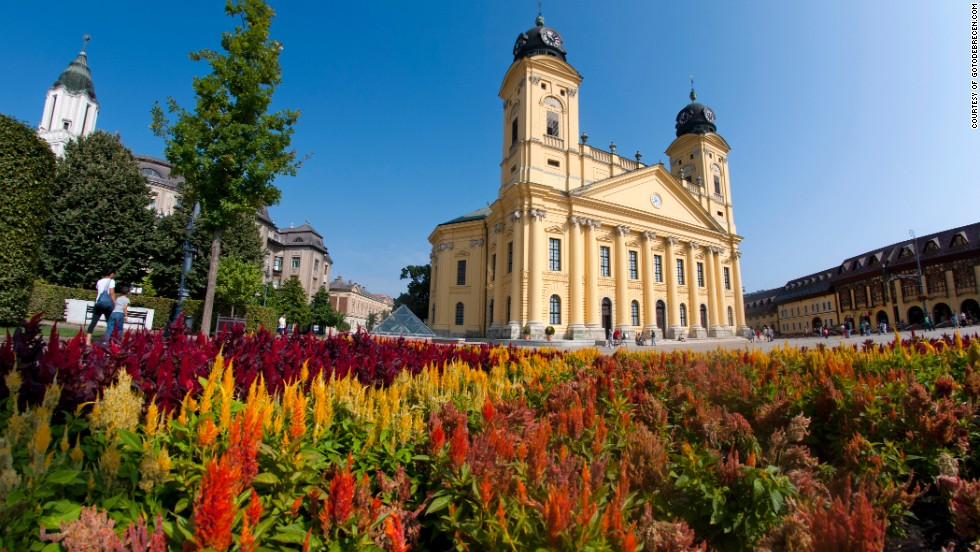
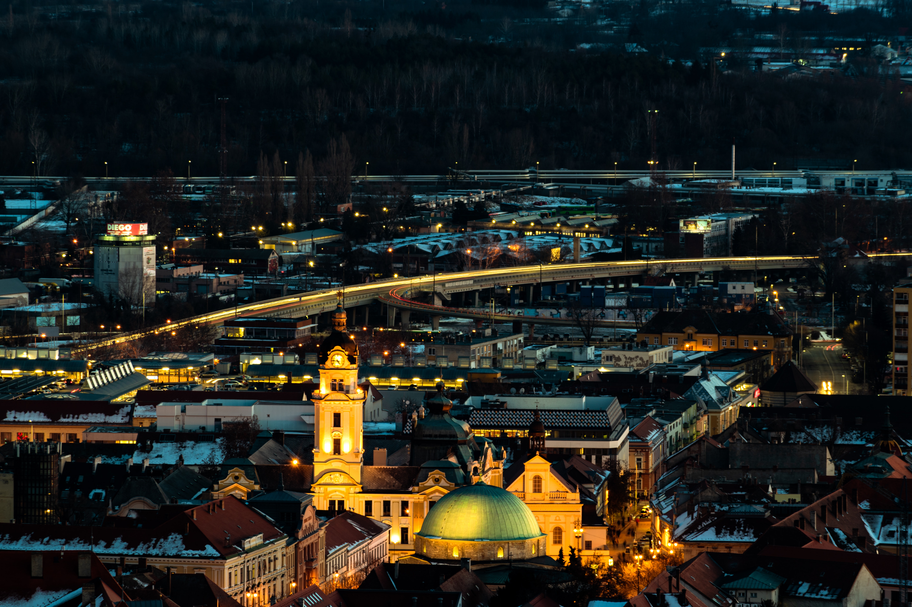
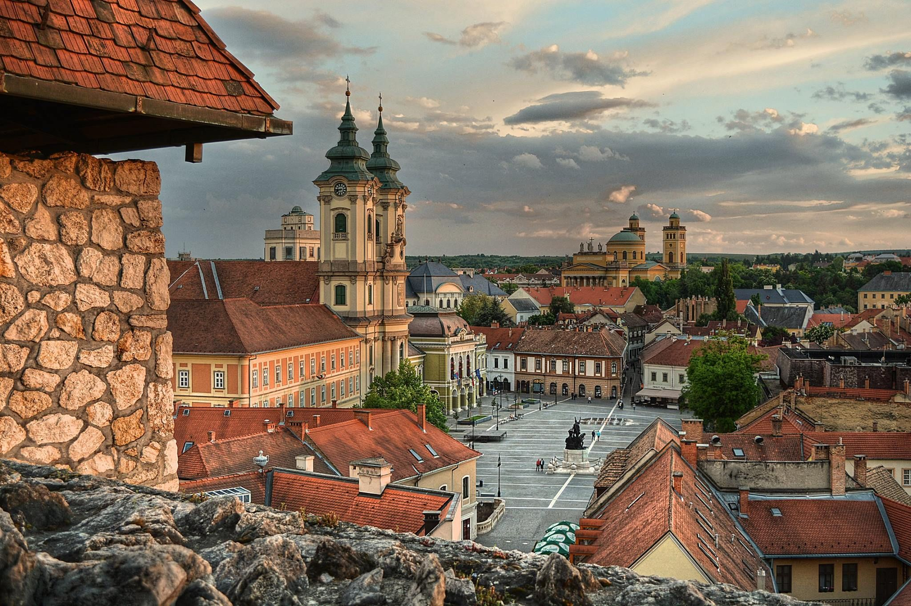
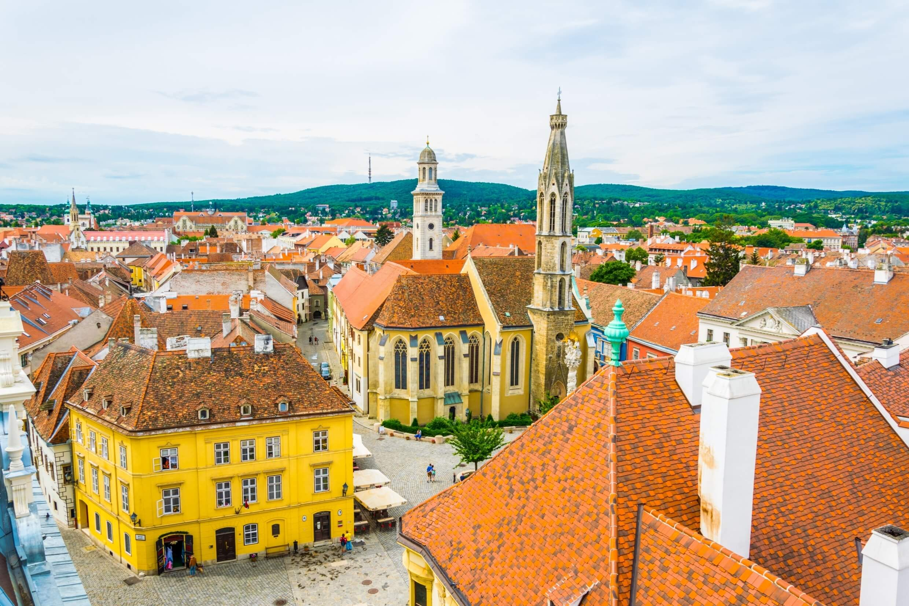
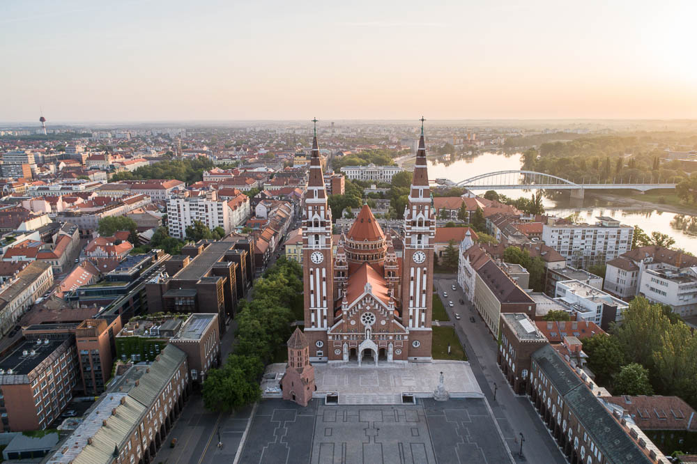

your next destination
HUNGARY
Welcome to Hungary
Hungary, located in the heart of Europe, offers stunning landscapes, rich history, and delicious cuisine. Explore the vibrant capital city of Budapest, venture into the wine country, or discover breathtaking natural wonders such as the Danube Bend and Lake Balaton. Hungary promises an unforgettable experience that will leave you wanting more.
Budapest - The Pearl of the Danube
Welcome to Budapest, the vibrant capital city of Hungary! Often referred to as the "Pearl of the Danube," Budapest is a stunning destination with a rich cultural history and an abundance of attractions to explore. From the ornate architecture of its iconic landmarks to the city's world-renowned thermal baths, Budapest is a must-visit destination for any traveler. Begin your journey by taking a stroll along the Danube River, where you can take in breathtaking views of the city's famous bridges, including the Chain Bridge and the Liberty Bridge.

Debrecen - The Cultural Capital of Hungary
Discover the vibrant city of Debrecen, located in the eastern part of Hungary. Known as the "Cultural Capital of Hungary," Debrecen is a must-visit destination for any traveler interested in history, art, and architecture. Start your journey by visiting the magnificent Great Reformed Church, a stunning example of neoclassical architecture that is considered the symbol of the city. Take a stroll through the lush surroundings of Nagyerdő, the largest park in Debrecen, where you can enjoy a picnic or visit the city's zoo.

Pécs - The City of Mediterranean Vibes
Nestled in the southwest part of Hungary, Pécs is a hidden gem that offers a unique blend of history, culture, and Mediterranean charm. From its stunning Roman ruins to its vibrant arts scene, Pécs is a must-visit destination for any traveler.
Begin your journey by visiting the impressive Pécs Cathedral, a UNESCO World Heritage Site that boasts a beautiful mix of Gothic, Romanesque, and Baroque styles.

Eger - The City of Thermal Baths and Wine
Nestled in the rolling hills of northern Hungary, Eger is a charming city that is known for its world-renowned thermal baths and excellent wines. Whether you're looking to relax and unwind or indulge in some of the best wine and cuisine that Hungary has to offer, Eger is the perfect destination.
Start your journey by visiting the iconic Castle of Eger, a medieval fortress that played a significant role in Hungary's history. Take a stroll through the historic downtown area, where you can visit the stunning Basilica of St. John the Apostle or explore the quaint Dobó Square, named after the Hungarian hero István Dobó.

Sopron - The City of Living History
Nestled in the northwestern corner of Hungary, Sopron is a city that is steeped in history and culture. From its charming medieval architecture to its rich wine-making traditions, Sopron is a must-visit destination for any traveler.
Start your journey by visiting the stunning Fire Tower, a medieval watchtower that offers breathtaking views of the city and surrounding countryside. Take a stroll through the historic downtown area, where you can explore the charming narrow streets and visit the impressive Soproni Múzeum, which showcases the city's rich history and culture.

Szeged - The City of Sunshine and Spice
Located in the southern part of Hungary, Szeged is a city that is renowned for its warm Mediterranean climate and spicy cuisine. Whether you're looking to soak up the sun or indulge in some of the best paprika dishes that Hungary has to offer, Szeged is the perfect destination.
Start your journey by visiting the impressive Szeged Cathedral, a stunning example of neo-Romanesque architecture that is considered one of the city's most impressive landmarks. Take a stroll through the picturesque downtown area, where you can explore the charming narrow streets and visit the beautiful Dóm Square, which is lined with cafes and restaurants.